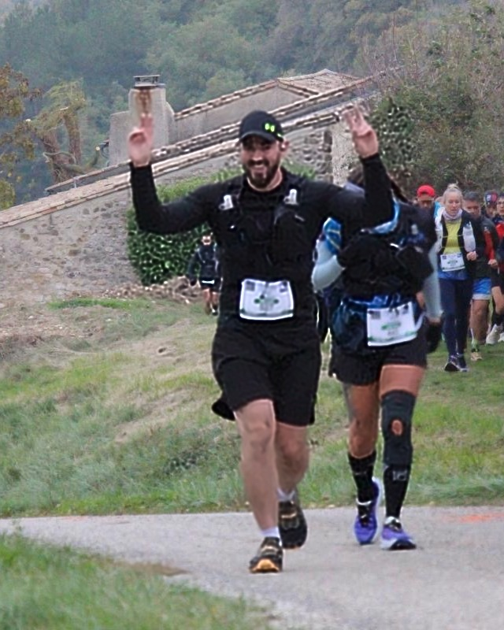

Deux matins, deux courses, deux ambiances. Samedi, sous un beau ciel d'automne, Malataverne lançait la toute première Malata'Run. Une course que Mrun a accompagnée avant, pendant et après : avant, avec le site internet chargé de la faire connaître ; pendant, avec Mathilde BAUDELOCQ, 2ᵉ féminine du 10K, et Mathieu MAURAGE derrière la caméra et aux commandes du drone ; après, avec le film de cette première édition, en ligne dès le lendemain.
Dimanche, changement de décor : 5 °C, un brouillard qui ne se lève pas, et Steven MARANGONI au départ du Trail de la Raye, à La Baume-Cornillane, aux portes du Vercors. Inscrit 48 heures plus tôt et annoncé dernier, il termine 182ᵉ sur 209, avec 25 minutes d'avance sur les pronostics.
- Samedi
- Malata'RunMalataverne10K · 400 m D+
- Dimanche
- Trail de la RayeLa Baume-Cornillane18K · près de 900 m D+
- Mrun
- 2 athlètes+ site & film de l'épreuve
🎉 Samedi — Une première à Malataverne
Il y a des courses qu'on regarde naître. La Malata'Run en fait partie : une première édition, organisée par la mairie de Malataverne, le village voisin. Pas de références, pas d'historique, pas de chrono de l'an dernier à aller battre. Juste une ligne de départ toute neuve et l'envie que la fête soit belle.
Ce samedi, on le raconte donc de deux points de vue : celui de la ligne de départ… et celui de derrière l'objectif.
🥈 Mathilde BAUDELOCQ — 10K, la vitesse comme terrain d'entraînement
10 km / 400 m D+ — Samedi 31 octobre 2026, Malataverne
Une séance de vitesse grandeur nature
Pour Mathilde, ce 10K n'arrive pas par hasard. Il s'inscrit parfaitement dans son programme de préparation à la SainteSprint : un entraînement vitesse, en conditions réelles, avec un dossard sur le ventre. La suite logique, aussi, de la course voisine d'Allan, qu'elle a remportée le 11 octobre dernier.
Départ à 10 h, beau temps, un parcours qu'elle découvre complètement. Et un seul but en tête : la gagner.
Partie sur les chapeaux de roues
Mathilde part fort. Très fort. Le premier kilomètre, en montée, passe en 4'22". Mais le profil de la course se dévoile vite, et il ne pardonne pas : du faux plat montant, encore et encore. À fond sur ce terrain-là, le souffle se fait court, et la souffrance arrive tôt.
Dès les premiers mètres, la première féminine la dépasse. Au 3ᵉ kilomètre, c'est au tour de la deuxième. Mathilde serre les dents : il faut tenir le rythme, ne pas lâcher la dernière marche du podium.
Le mur du 7ᵉ kilomètre
Puis le parcours abat sa carte maîtresse : au 7ᵉ kilomètre, une montée très raide, longue d'un kilomètre. Le genre de passage où les jambes parlent plus fort que la tête. Et c'est exactement là que la course de Mathilde bascule. Comme à Allan, c'est dans la pente qu'elle fait la différence : elle remonte, elle double une dizaine d'hommes… et reprend la deuxième place féminine.
Une descente à 40 %, un sprint dans les rues
Vient ensuite la descente, raide : 40 %. Impossible de lâcher les chevaux sur une telle pente — mais Mathilde parvient à y mettre du rythme, et elle en ressort satisfaite.
Reste le dernier kilomètre, dans les rues de Malataverne. Il se court au sprint, à 4'00" au kilomètre. La ligne, enfin : Mathilde BAUDELOCQ franchit l'arrivée en 59 minutes, 2ᵉ féminine.
Résultats — Mathilde Baudelocq
- CourseMalata'Run — 10K (1ʳᵉ édition)
- DateSamedi 31 octobre 2026
- Format10 km · 400 m D+
- Temps59 min
- Classement femmes2ᵉ 🥈
- Allure moyenne5'54" / km
Le mot de Mathilde
C'était une jolie course, mais les formats aussi courts sont aussi très rapides : je n'aurais pas pu en faire bien plus à ce rythme.
Pourquoi pas refaire le 21 l'année prochaine ?!
🎬 Mrun en coulisses — du site internet au film
Ce samedi, Mrun ne courait pas seulement pour un chrono. L'association s'est engagée pour promouvoir et développer cette course locale, dès sa naissance.
En amont : un site pour exister
Une première édition, c'est une course que personne ne connaît encore. Mrun a donc mis à disposition de l'organisation un site internet, en ligne en amont de la course, pour le référencement et la visibilité : malatarun.fr. Et la mission est remplie : la course affichait complet dès la veille du départ.
Sur place : faire le plein d'images
Le jour J, caméra au sol et drone dans les airs, Mathieu a fait le plein d'images. Objectif : rapporter de quoi raconter, en un film, l'histoire de cette toute première Malata'Run.
Le lendemain : un film en un temps record
Le pari a été tenu dans un temps record : le film récapitulatif de la 1ʳᵉ édition était en ligne dès le dimanche après-midi, au lendemain de la course. C'est l'un des piliers de Mrun : la mise en lumière. Mettre en valeur les épreuves et celles et ceux qui les font vivre, avec des images à la hauteur de l'effort.
🌫️ Steven MARANGONI — Trail de la Raye, le pari du dernier moment
18 km / près de 900 m D+ — Dimanche 1ᵉʳ novembre 2026, La Baume-Cornillane
Un dossard sur un coup de tête
Vendredi. Deux jours avant la course. Steven prend son dossard, comme ça, sur un coup de tête.
Sur le papier, rien ne plaidait pour lui. Tout l'été, il avait préparé un trail prévu en septembre — un objectif qu'il n'a finalement pas pu courir. Depuis, l'entraînement en course à pied s'était fait moins régulier. Steven s'élance donc sans véritable repère sur sa forme du moment. Et les projections, elles, ne lui laissent aucune illusion : elles le placent en dernière position.
Dimanche matin, il faut assumer cette inscription de dernière minute.
Dans le brouillard, au pied du Vercors
Le départ se donne au pied du Vercors, dans une ambiance pleinement automnale : le thermomètre avoisine les 5 °C, et un brouillard persistant enveloppe les coureurs du début à la fin, avalant les paysages alentour. On ne voit pas loin. Alors on regarde devant soi, et on avance.
Et ça avance bien. Les sensations sont bonnes, du premier au dernier kilomètre. Très vite, Steven se retrouve dans le dernier groupe de coureurs, et se fixe un objectif d'une simplicité désarmante : éviter la dernière place.

Le 14ᵉ kilomètre
Au 14ᵉ kilomètre, au deuxième ravitaillement, le corps envoie ses premiers signaux : des amorces de crampes aux mollets. Steven jette un œil à sa montre… et découvre qu'il est en avance sur son temps prévu. Le genre de nouvelle qui fait oublier, un instant, les mollets qui tirent.
Seul jusqu'à l'arche
À partir de là, une bonne partie du parcours se fait seul. Personne devant, personne derrière, aucun repère sur son classement. Juste le brouillard, le sentier, et les crampes à apprivoiser, foulée après foulée. Steven gère. Il ne lâche rien. Mieux : malgré les mollets qui menacent, ce dernier tronçon, du 14,7ᵉ kilomètre à l'arrivée, est son plus rapide de la journée — 6'58" au kilomètre. Jusqu'au passage de l'arche d'arrivée.
25 minutes devant les pronostics
Le verdict tombe : 2 h 26'02", 182ᵉ sur 209 au scratch. Annoncé dernier, Steven laisse finalement 27 coureurs derrière lui — et termine avec 25 minutes d'avance sur les prévisions initiales. Un résultat très satisfaisant au regard de cette inscription improvisée. Et la préparation menée durant l'été pour son objectif de septembre n'y est sans doute pas étrangère : le travail ne s'était pas envolé, il attendait juste une ligne de départ.
Résultats — Steven Marangoni
- CourseTrail de la Raye — 18K
- DateDimanche 1ᵉʳ novembre 2026
- Format18 km · près de 900 m D+
- Temps2 h 26'02"
- Classement scratch182ᵉ / 209
Le mot de Steven
Inscrit sur un coup de tête à 48 heures du départ, avec une préparation loin d'être optimale, les pronostics m'annonçaient bon dernier. Finalement, 25 minutes de gagnées sur les prévisions…
Comme quoi, il suffit parfois de prendre le départ pour se surprendre soi-même !
🏁 Un week-end, deux visages
Samedi, le beau temps, la vitesse, les faux plats montants courus à bloc et une course qui naît sous les yeux de Mrun. Dimanche, le froid, le brouillard, et un coureur seul avec ses crampes qui fait mentir les pronostics. Entre les deux : une 2ᵉ place, un film, un site, une course complète — et la preuve, une fois de plus, que chez Mrun, on se prépare à réussir, et on met en lumière ceux qui osent prendre le départ.
Retour aux communiqués